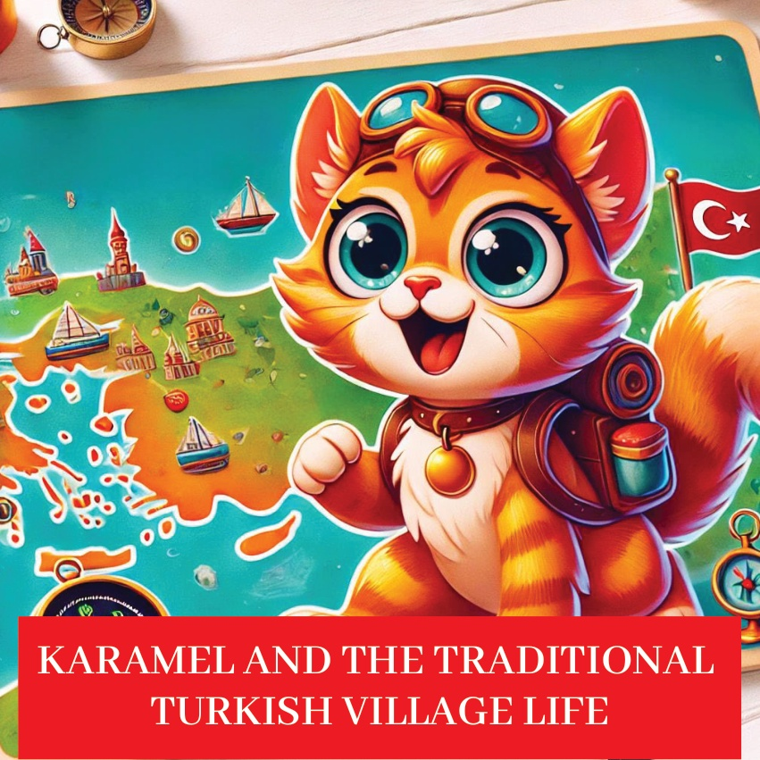
1

2

3
Kada yılında, živio je jedan radoznal mali mačak po imenu Karamel, koji je voleo da istražuje i otkriva. Jednog dana, odlučio je da poseti tradicionalna turska sela kako bi video kako je život u selu jednostavan i lep, i naučio o lokalnim običajima i tradicijama.
4
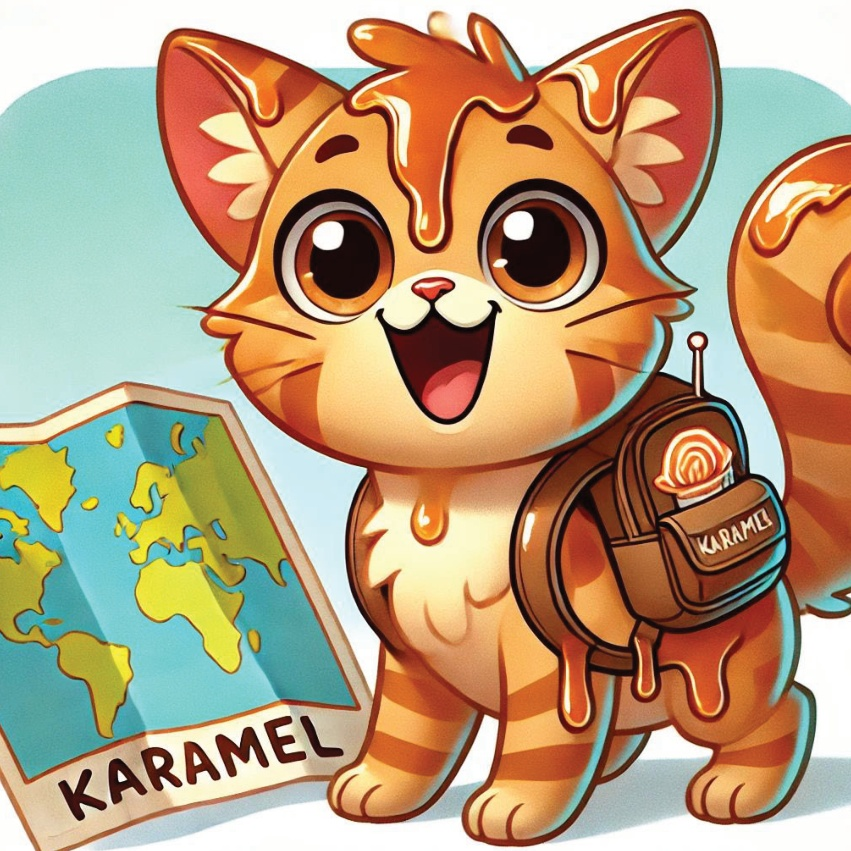
5
Karamelina första stopp var ett charmigt by som låg i kullarna. Byn hälsade henne varmt och bjöd in henne att vara med i deras dagliga sysslor och firanden.
6
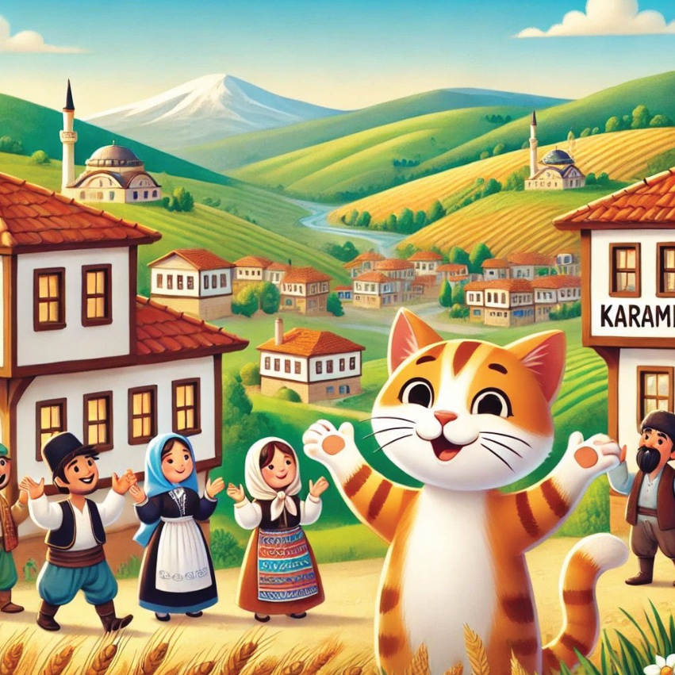
7
Žetva na poljanama.
Karamel se pridružila seljanima na poljanama, gde su skupljali žetvu. Naučila je kako da bira voće i povrće i uživala u svežim, zemljanim mirisima села.
8
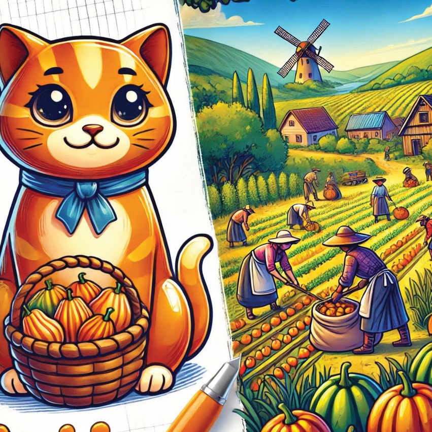
9
Praćenje recepta za kruh Karamel pomoglo je u pravacenju tradicionalnog kruha. Seoski ljudi joj je pokazali kako da mesa testo i peče ga u peći od kamena. Mirisa svežleh pečenog kruha ispunio je vazduh.
10
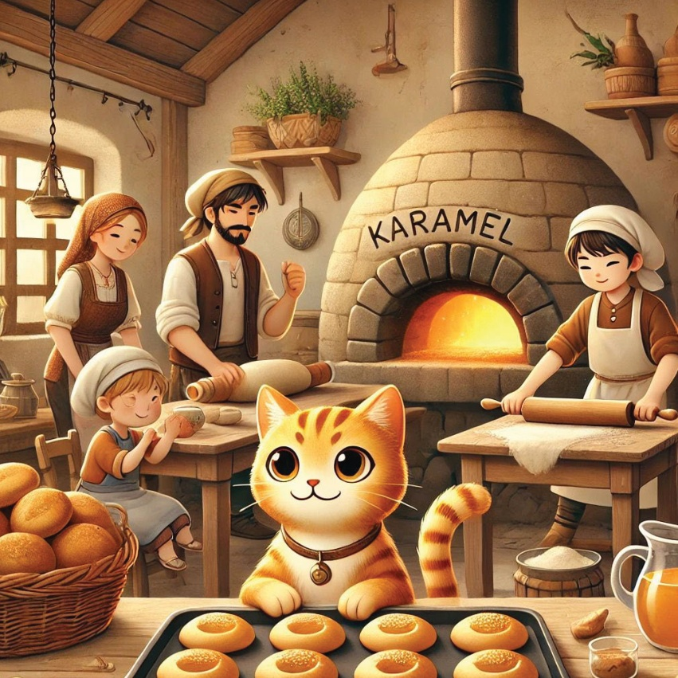
11
Folkor ples i muzika.
Večeras, Karamel je video živopisan folkor ples. Seljani su svirali tradicionalne instrumente i plesali sa srećom, učeći Karamelu neke plesne pokrete.
12
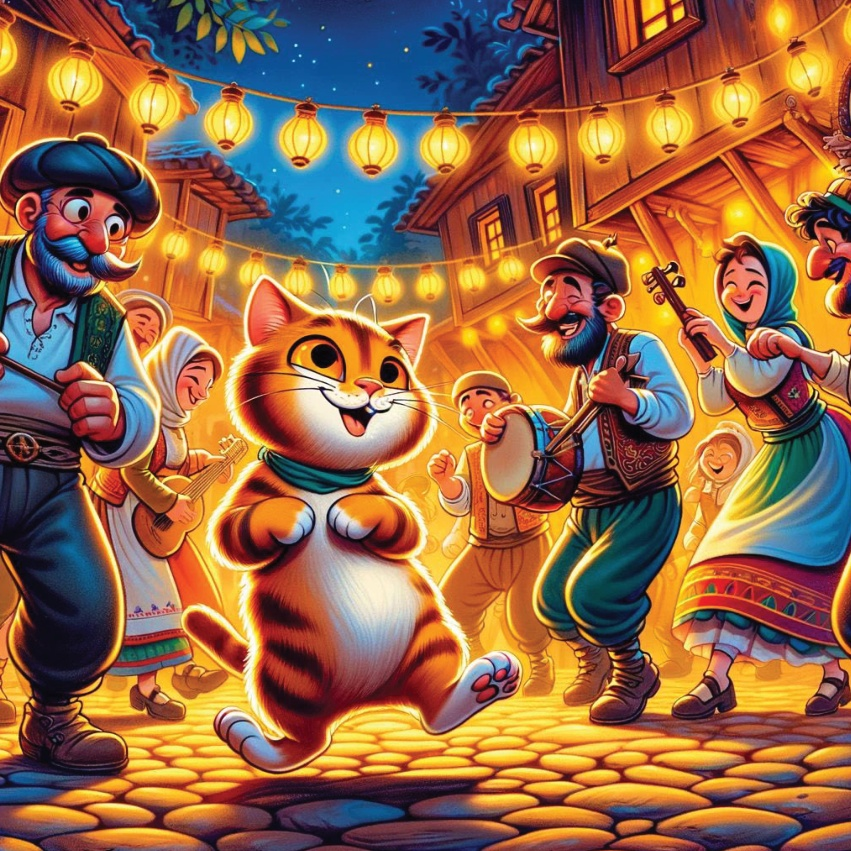
13
Lokalna zanatnica Karamel posjetila je lokalne majstore koji su pravili prekrasne ručne izradi. Gledala ih je kako prave грнчарију, tepihove i složene nakit, divila se njihovim vještinama.
14
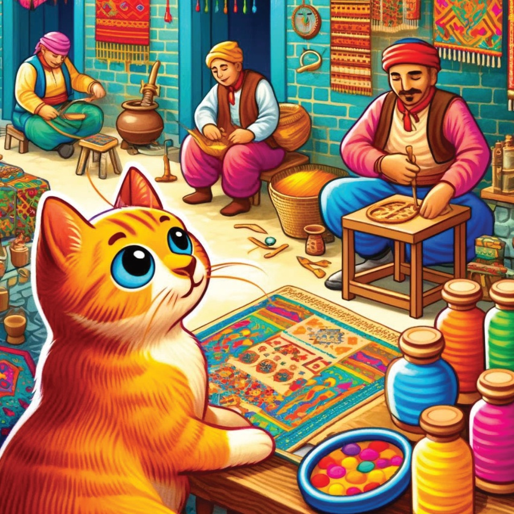
15
Seoska Proslava..
U selu se pripremio veliki proslavni obrok sa tradicionalnim jelima. Karamel je uživao u ukusnoj hrani i uživao u osećaju zajedništva i slavlje.
16
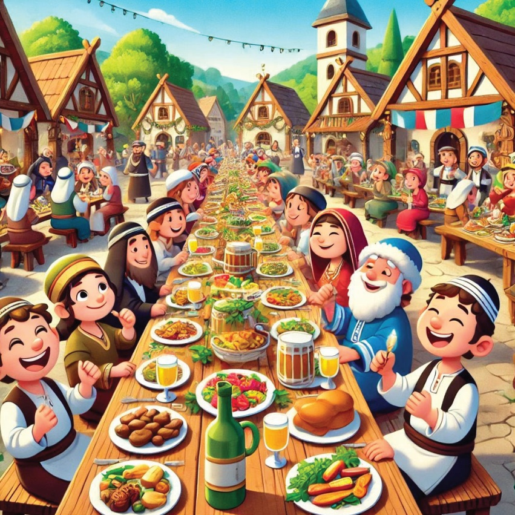
17
Priče kod ognjišta..
Kako je noć postajala sve tamnija, svi su se okupili oko plamena. Starci su pričali priče o prošlosti sela, a Karamel je pažljivo slušao, očaran pričama.
18
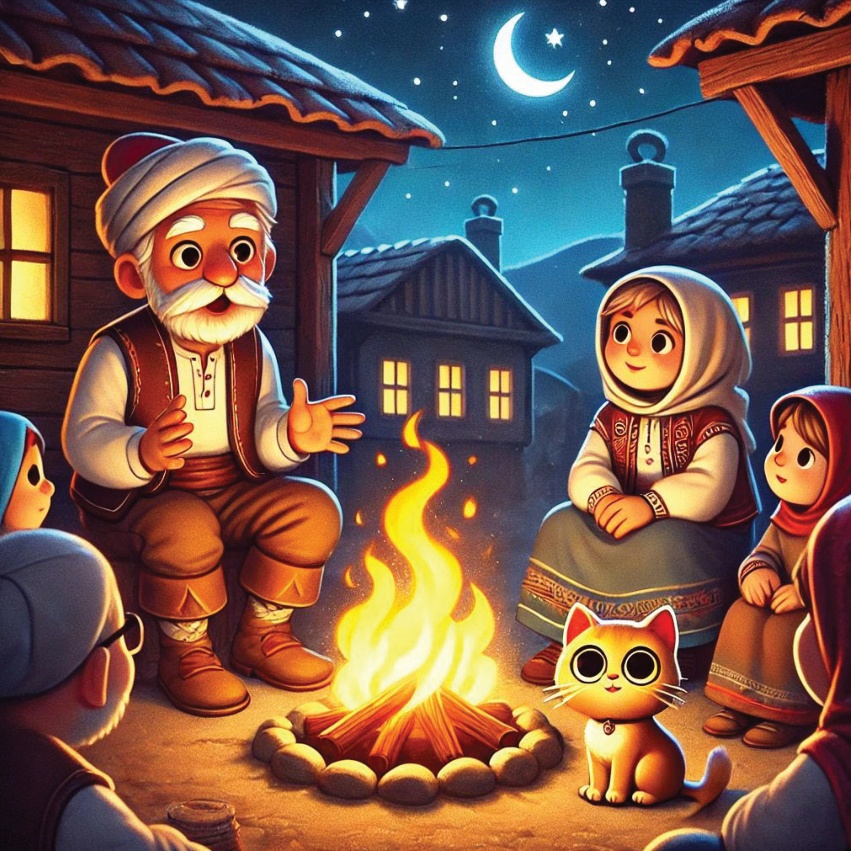
19
Karamel je sa srcem punim novih doživljaja i uspomena shvatila koliko je bogat i lep život u tradicionalnom turskom selu. Kući se vratila sanjajući o svom sledećem avanturama.
20
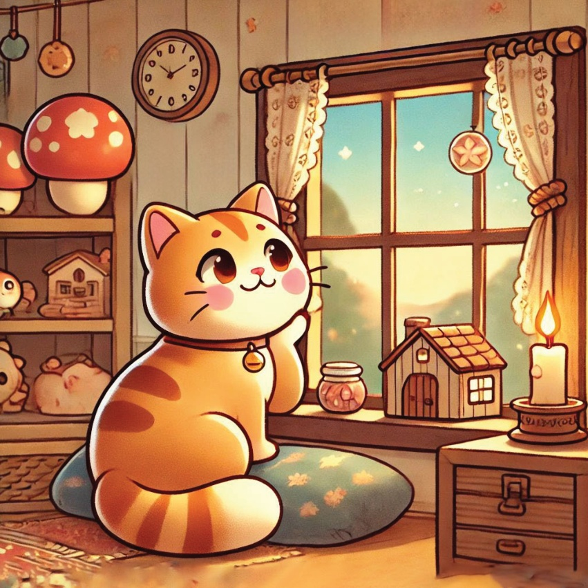
21
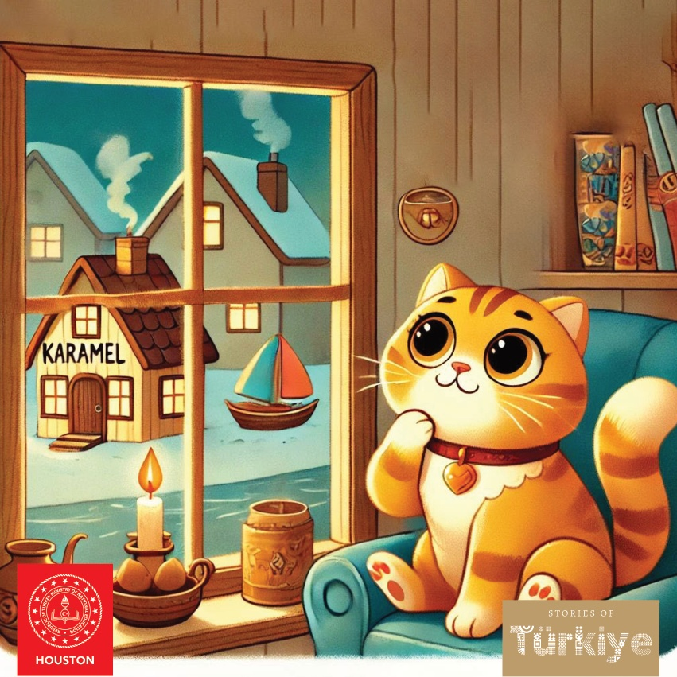
22